CSS问题
参考web技术文档
1 CSS3动画
1.1 CSS3属性transform
在CSS3中，可以利用transform功能来实现文字或图像的旋转、缩放、倾斜、移动这四种类型的变形处理，本文将对此做详细介绍。
1.1.1 旋转 rotate
用法：transform: rotate(45deg); 共一个参数“角度”，单位deg为度的意思，正数为顺时针旋转，负数为逆时针旋转，上述代码作用是顺时针旋转45度。
1.1.2 缩放 scale
用法：transform: scale(0.5) 或者 transform: scale(0.5, 2); 参数表示缩放倍数； 一个参数时：表示水平和垂直同时缩放该倍率 两个参数时：第一个参数指定水平方向的缩放倍率，第二个参数指定垂直方向的缩放倍率。
1.1.3 倾斜 skew
用法：transform: skew(30deg) 或者 transform: skew(30deg, 30deg);
参数表示倾斜角度，单位deg
一个参数时：表示水平方向的倾斜角度；
两个参数时：第一个参数表示水平方向的倾斜角度，第二个参数表示垂直方向的倾斜角度。
关于skew倾斜角度的计算方式表面上看并不是那么直观，这里借鉴某大拿绘制的图举例说明一下：
首先需要说明的是skew的默认原点transform-origin是这个物件的中心点
skewX(30deg) 如下图：
 skewY(10deg) 如下图：
skewY(10deg) 如下图：
 skew(30deg, 10deg) 如下图：
skew(30deg, 10deg) 如下图：

1.1.4 移动 translate
用法：transform: translate(45px) 或者 transform: translate(45px, 150px); 参数表示移动距离，单位px， 一个参数时：表示水平方向的移动距离； 两个参数时：第一个参数表示水平方向的移动距离，第二个参数表示垂直方向的移动距离。
1.1.5 基准点 transform-origin
在使用transform方法进行文字或图像的变形时，是以元素的中心点为基准点进行的。使用transform-origin属性，可以改变变形的基准点。 用法：transform-origin: 10px 10px; 共两个参数，表示相对左上角原点的距离，单位px，第一个参数表示相对左上角原点水平方向的距离，第二个参数表示相对左上角原点垂直方向的距离； 两个参数除了可以设置为具体的像素值，其中第一个参数可以指定为left、center、right，第二个参数可以指定为top、center、bottom。
1.1.6 多方法组合变形
上面我们介绍了使用transform对元素进行旋转、缩放、倾斜、移动的方法，这里讲介绍综合使用这几个方法来对一个元素进行多重变形。 用法：transform: rotate(45deg) scale(0.5) skew(30deg, 30deg) translate(100px, 100px) 这四种变形方法顺序可以随意，但不同的顺序导致变形结果不同，原因是变形的顺序是从左到右依次进行，这个用法中的执行顺序为1.rotate 2.scalse 3.skew 4.translate 两个参数时：第一个参数表示水平方向的移动距离，第二个参数表示垂直方向的移动距离。
2 float布局问题
2.1 什么是CSS Float？
定义: float 属性定义元素浮动到左侧或右侧。以往这个属性总应用于图像，使文本围绕在图像周围，不过在 CSS 中，任何元素都可以浮动。浮动元素会生成一个块级元素，而不论它本身是何种元素。元素对象设置了float属性之后，它将不再独自占据一行。浮动块可以向左或向右移动，直到它的外边缘碰到包含它的框或另一个浮动块的边框为止。 fload属性有四个可用的值：Left 和Right 分别浮动元素到各自的方向，None (默认的) 使元素不浮动，Inherit 将会从父级元素获取float值。
2.2 Float的用处
除了简单的在图片周围包围文字，浮动可用于创建全部网页布局。 浮动对小型的布局同样有用。例如页面中的这个小区域。如果我们在我们的小头像图片上使用浮动，当调整图片大小的时候，盒子里面的文字也将自动调整位置： 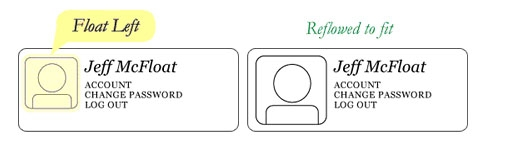 同样的布局可以通过在外容器使用相对定位，然后在头像上使用绝对定位来实现。这种方式中，文本不会受头像图片大小的影响，不会随头像图片的大小而有相应变化。 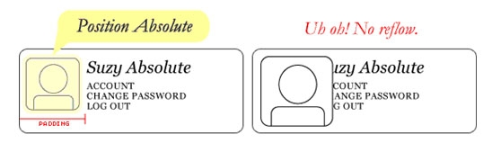
2.3 float浮动元素不占据正常文档流空间
由于浮动块不在文档的普通流中，所以文档的普通流中的块表现得就像浮动块不存在一样。 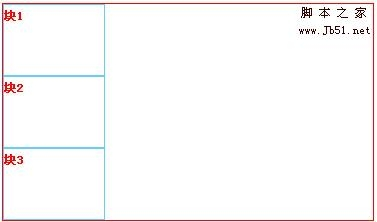
<div> <div><span>块1</span></div> <div><span>块2</span></div> <div><span>块3</span></div> </div>块1向右浮动，脱离文档流并且向右移动，直到它的右边缘碰到包含块的右边缘。
<div> <div><span>块1</span> float:right </div> <div><span>块2</span></div> <div><span>块3</span></div> </div>块1向左浮动，脱离文档流并且向左移动，直到它的左边缘碰到包含块的左边缘;IE8和Firefox中因为它不再处于文档流中，所以它不占据空间，实际上覆盖住了块 2，使块2从视图中消失。而块2的内容却显示在块1未浮动时块2所处的位置。而IE6和IE7中紧跟在浮动元素块1的块2也会跟着浮动。如下图 IE8和Firefox 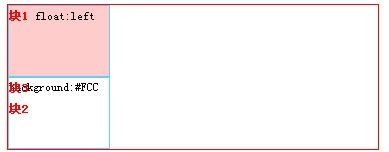 IE6和IE7 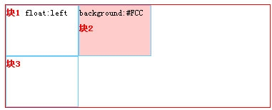
<div> <div><span>块1</span> float:left </div>> <div>style="background:#FCC;">background:#FCC<span>块2</span></div> <div><span>块3</span></div> </di>>
2.4 浮动“塌陷”
使用浮动(float)的一个比较疑惑的事情是他们怎么影响包含他们的父元素的。如果父元素只包含浮动元素，且父元素未设置高度和宽度的时候。那么它的高度就会塌缩为零。如果父元素不包含任何的可见背景，这个问题会很难被注意到，但是这是一个很重要的问题。在这里我们可以称为“塌陷”。如下图 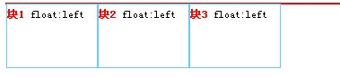
<div> <div><span>块1</span> float:left</div> <div><span>块2</span> float:left</div> <div><span>块3</span> float:left</div> </div>解决“塌陷”问题有以下三个方法 (1)在使用float元素的父元素结束前加一个高为0宽为0且有clear:both样式的div 如下图 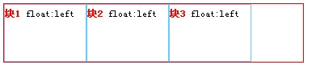
<div> <div><span>块1</span> float:left </div> <div><span>块2</span> float:left</div> <div><span>块3</span> float:left</div> <div></div> </div>(2)在使用float元素的父元素添加overflow:hidden;如下图 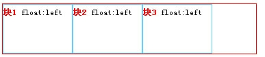
<div> <div><span>块1</span> float:left </div> <div><span>块2</span> float:left</div> <div><span>块3</span> float:left</div> <div></div> </div>(3)给父元素使用after伪对象清除浮动 如下图 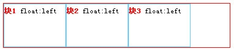
<div> <div><span>块1</span> float:left </div> <div><span>块2</span> float:left</div> <div><span>块3</span> float:left</div> <div></div> </div>
2.5 IE6双边距问题
IE6双边距问题：一个居左浮动(float:left)的元素放置进一个容器盒(box)，并在浮动元素上使用了左边界(margin-left) 在ie6内便产生双倍边距。如下图 IE7、IE8和Firefox 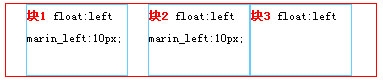 IE6 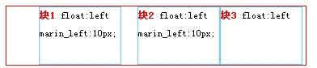
<div> <div><span>块1</span> float:left marin_left:10px; </div> <div><span>块2</span> float:left marin_left:10px; </div> <div><span>块3</span> float:left</div> </div>这个Bug仅当浮动边界和浮动元素的方向相同时出现在浮动元素和容器盒的内边缘之间，在这之后的任意有着相似边界的浮动元素不会呈现双倍边界。只有特定的浮动行的第一个浮动元素会遭遇这个Bug。像居左的情况一样，双倍边界同样神秘地显示在居右的相同方式。 解决IE6双边距问题: display:inline; 使浮动忽略 如下图 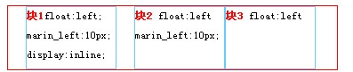
2.6 IE6文本产生3象素的bug
浮动IE6文本产生3象素的bug时指挨着浮动元素的文本会神奇的被踢出去3像素，好像浮动元素的周围有一个奇怪的力场一样。如下图 IE7、IE8和Firefox 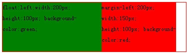 IE6 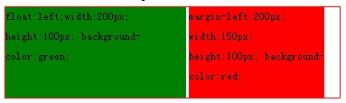 解决浮动IE文本产生3象素问题以下有两个方法 (1)左边对象浮动，右边采用外补丁的左边距来定位 如下图 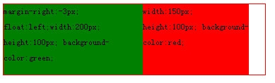 firefox、IE7、IE8、IE6 (2)左边对象浮动，右边对象也浮动 如下图 firefox、IE7、IE8、IE6
2.7 IE6,IE7 中，底边距 bug
·IE6,IE7 中，底边距 bug是当浮动父元素有浮动子元素时，这些子元素的底边距会被父元素忽略掉。如下图 Firefox 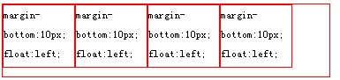 IE6、IE7 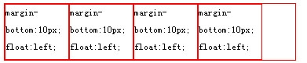 解决IE6,IE7 中，底边距 bug：用父元素的底内补白(padding)代替。如下图 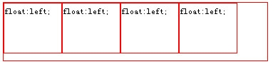